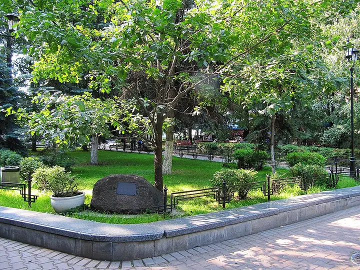

Фото: Vladimir OKC, CC BY-SA 3.0 · Wikimedia Commons
Сад · ЦАО
Сад «Аквариум»
Небольшой сад с фонтаном у Театра Моссовета на Садовом кольце.
- ₽ · до 1 500 ₽ на человека
- в 1 плане
Позвать сюда: Сад «Аквариум»Открыть в каталоге: Сад «Аквариум»Маршрут до места: Сад «Аквариум»
Адрес и детали
- Адрес
- ул. Большая Садовая, 16
Открыть на Яндекс Картах (в новой вкладке) - Метро
- м. Маяковская
- Округ
- Центр (ЦАО)
- Цена
- до 1 500 ₽ на человека
- Проверено
- работает — проверили в октябре 2026
Планы с этим местом 1
- Сад «Аквариум» · Сад · м. Маяковская
- 3 минуты пешкомОблако · Ресторан на крыше
Сад «Аквариум» и терраса на крыше гостиницы «Пекин» на закате.
Открыть план: Крыша «Пекина»Позвать сюда: Крыша «Пекина»
Фото: Vladimir OKC, CC BY-SA 3.0 · Wikimedia Commons

Похожие рядом


Что ещё рядом

Как позвать
- Выбери план, место или событие — в карточке адрес, цены и маршрут в Яндекс Картах.
- Нажми «Позвать сюда» — соберётся приглашение-игра для свидания или голосование для компании.
- Отправь ссылку в любой мессенджер: тебе ответят, а компания отметит, куда и когда может. Бесплатно и без регистрации.